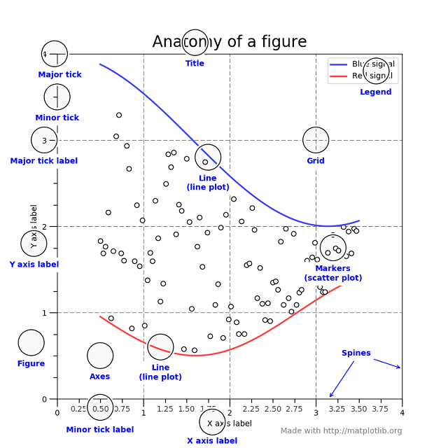

Plot
Plot quick reference.
%matplotlib inline
# %matplotlib notebook # Interactive plot, need restart Jupyter Notebook kernel
import pandas as pd
import matplotlib.pyplot as plt
import matplotlib.ticker as ticker
import matplotlib.dates as mdates
fig, ax = plt.subplots()
data.plot(ax=ax)
data["column"].plot(ax=ax)
# plot type
data.plot(ax=ax, kind="line")
# style
data.plot(ax=ax, style=["b", "ro--"])
# legend
data.plot(ax=ax, legend=True)
ax.legend(labels=["label1", "label2"], loc="upper right")
# title
fig.suptittle("")
ax.set_title("title")
ax.set_ylabel("y label")
ax.set_xlabel("x label")
# grid
ax.grid(True)
# axis, tick
ax.set_xlim(left, right)
ax.get_xaxis().set_major_locator(mdates.MonthLocator(interval=4))
ax.get_xaxis().set_major_formatter(mdates.DateFormatter("%b %Y"))
ax.get_yaxis().set_major_formatter(ticker.PercentFormatter())
# annotation
ax.annotate(text="text", xy=(x, y), xytext=(x + 5, y + 5), arrowprops=dict(arrowstyle="->"))
# size
fig.set_size_inches(width, height)
fig.tight_layout()

Plot types
kind=
| value | graphic |
|---|---|
| line | line plot (default) |
| bar | vertical bar plot |
| barh | horizontal bar plot |
| hist | histogram |
| box | boxplot |
| kde | Kernel Density Estimation plot |
| density | same as kde |
| area | area plot |
| pie | pie plot |
| scatter | scatter plot |
| hexbin | hexbin plot |
Style
style="[color][marker][linestyle]"
Color
| shortname | color |
|---|---|
| b | blue |
| g | green |
| r | red |
| c | cyan |
| m | magenta |
| y | yellow |
| k | black |
| w | white |
Hex decimal code is supported. e.g. #aabbcc
Marker
| shortname | name |
|---|---|
| o | circle |
| . | point |
| s | square |
- | star
- | plus
Line style
| shortname | name |
|---|
- | solid – | dashed : | dotted -. | dashdot {I’m a space} | none